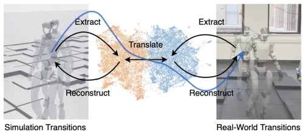
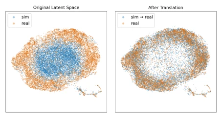

This paper attempts to address the chronic Sim-to-Real challenge using a 'hindsight' approach. The core idea is ingenious: since forward prediction is constrained by insufficient historical observations, it is preferable to infer hidden variables from the outcomes. However, this strategy essentially 'shifts the goalposts' — it assumes the simulator can perfectly reproduce physical consequences; if the simulator's physical model is flawed, the 'truth' extracted in reverse is also false. Furthermore, CycleGAN training instability is a longstanding issue that remains unresolved here. Nevertheless, in scenarios such as contact events where history is unpredictable, it does indeed outperform models like RSSM that rely heavily on historical data. It can be considered adding a 'pathologist' module to the world model, although whether the autopsy report can guide driving depends on the simulator's fidelity. Additionally, the method exhibits high dependency on simulator physical parameters; if the simulator lacks key physical phenomena, the translation cannot be fabricated ex nihilo.
In Sim-to-Real transfer, the gap between simulation and reality is the core pain point. Existing methods such as Domain Randomization [4] sacrifice optimality, while System Identification [7] cannot model unmodeled dynamics. Learning dynamic models [11]-[14], although capable of fitting real data, face partial observability issues: identical observations may result in different outcomes due to hidden factors. Existing models assume hidden factors can be recovered from history [15]-[17], but fail in unanticipated scenarios like sudden contact, resulting in averaged predictions. This paper aims to address the dynamic modeling challenge under insufficient historical observation information, leveraging the advantage of simulator observable outcomes to compensate for the limitations of learning models. Particularly in proprioceptive locomotion scenarios involving sudden contact without warning, historical methods often fail.
The framework is divided into two steps. First is 'Reverse Dynamics Extraction', where a VAE encodes latent variable features $z_t$ from observed transition results $(o_t, a_t, o_{t+1})$, rather than predicting solely from history. To prevent $z_t$ from directly leaking observation information, a blind decoder adversarial loss is introduced; to prevent $z_t$ from ignoring domain features, a domain classifier and FiLM modulation are added. Second is 'Unpaired Domain Translation', utilizing CycleGAN [28] to translate simulation domain features $z_S$ to real domain $z_R$, maintaining dynamic content unchanged via cycle consistency while only converting domain style. During deployment, transitions are generated in simulation, features are extracted and translated, and simulation states are rewritten to train the policy. This method ensures features from different domains occupy a common latent space through joint training of VAE and CycleGAN, rendering the translation meaningful.

Fig. 1. World Translation bridges the sim-to-real gap by extracting dynamics features from observed transitions and translating them across domains. Black arrows are used during training; the blue arrow illustrates the inference pipeline, where simulation dynamics features are translated and reconstructed to predict real-world transitions. nal state and predicts deterministically but with physically inaccurate transitions, whereas a learned model predicts accurately from data but stays underdetermined under partial observability. The signal the learned model lacks is not gone. It lives in the transition outcome, which a simulator can observe at will. This motivates backward dynamics extrac- tion. Rather than predicting a transition forward from history, we encode the unobservable dynamics
Validated on G1 humanoid, Go2 quadruped, and R5 manipulator. Baselines include DirectPred, RawSim, ResDyn, and RSSM. Metrics include single-step prediction error, multi-step divergence rate, and real robot policy performance. Results show that in high-uncertainty tasks where hidden variables have significant impact, the error of the proposed method is significantly lower than RSSM and ResDyn. In Go2 real deployment, the angular velocity tracking error of the World Translation fine-tuned strategy was the lowest (0.1786 vs 0.2475). Ablation experiments demonstrate that cycle consistency is crucial for translation quality, and unpaired training reduces data requirements. Additionally, UMAP visualization confirms that features align with the real domain after translation, and auxiliary components effectively encode domain information.

Fig. 6. UMAP visualization of dynamics features on the R5 manipulator task. Left: original latent space shows domain separation reflecting c encoded in zt. Right: after translation, zS→R (blue) aligns with real domain zR (orange).